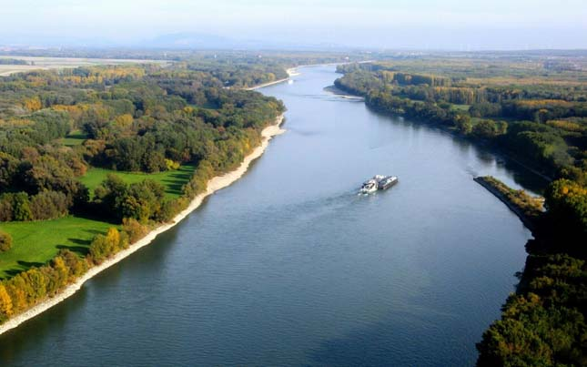
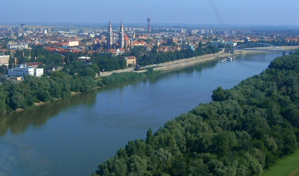
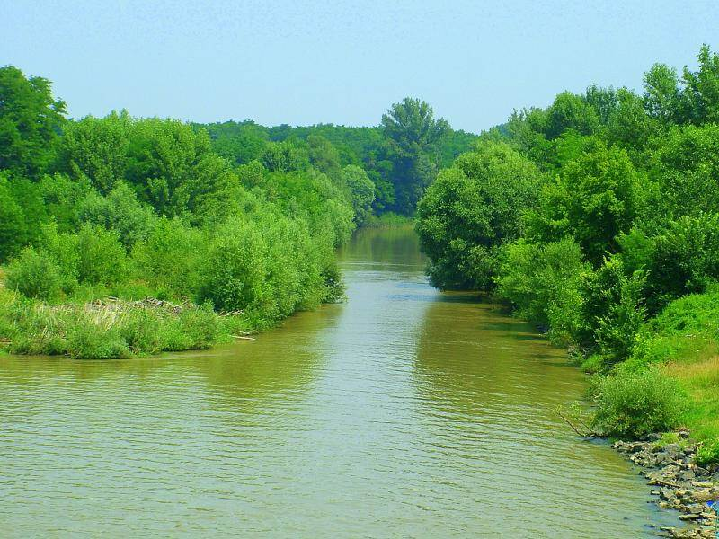
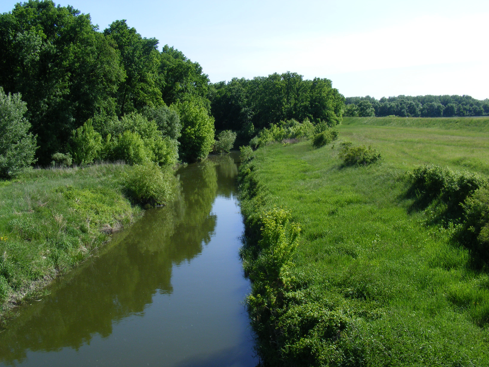

Duna

Információk
A Duna Magyarország területén kb. 417 km hosszan folyik keresztül, három fő szakaszra osztható:
Felső-Duna szakasz: Rajka és Esztergom között
Középső-Duna szakasz: Budapest és Paks között
Alsó-Duna szakasz: Paks és Mohács között
Fontosabb magyarországi mellékfolyói: Rába, Ipoly, Sió, Dráva, Tisza.
Tisza

Információk
Hossza:962 km
Főbb szakaszai
Felső-Tisza: A forrásától a magyar határig tart. Meredek esésű, gyors folyású szakasz.
Középső-Tisza: Magyarország területén található, a legnagyobb hosszúságban. Itt a folyó már lassabban folyik, jelentős kanyarulatokat képez.
Alsó-Tisza: A magyar-szerb határtól a torkolatig tart, ahol a folyó ismét gyorsabbá válik, mielőtt a Dunába ömlik.
Főbb mellékfolyói
Bodrog Zagyva Körösök Maros Szamos Hernád
Rába

Információk
Hossza:322km
Főbb szakaszai:
Felső szakasz: A folyó Ausztria területén, a Niedere Tauern-hegységben ered.
Középső szakasz: A folyó Szentgotthárdnál lép be Magyarországra.
Alsó szakasz: A folyó itt már lassabb folyású, és gyakran érint mocsaras területeket. Győrnél ömlik a Dunába, a Mosoni-Dunával együtt.
Főbb Városok a Rába mentén:
Szentgotthárd Körmend Sárvár Csorna Győr (itt torkollik a Dunába)
Zagyva

Információk
Hossza:179km
Főbb szakaszai:
Felső szakasz (Mátra és Cserhát vidéke) Középső szakasz (Jászság és Alföld északi része) Alsó szakasz (Tisza-torkolat, Szolnok környéke)
Főbb mellékfolyói:
Tarján-patak Galyas-patak Galga (a legjelentősebb mellékfolyója) Gyolcs-patak
Főbb városok a Zagyva mentén
Salgótarján Pásztó Hatvan Jászberény Jászapáti Szolnok (itt torkollik a Tiszába)